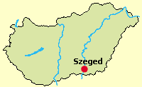
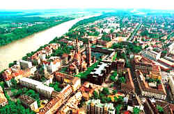
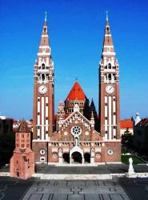
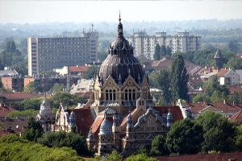

|
|
Zu
Deutsch Szegedin, mit
165.000 Einwohnern ist die Stadt Szeged Komitatssitz (Rang einer
deutschen Landeshauptstadt) und zugleich kulturell und wissenschaftlich
von Bedeutung.
Lage:
Szeged liegt auf beiden Seiten des zweitgrößten
ungarischen Flusses
Theiß im südöstlichen Landesteil. Die
Autobahn M5 führt von Budapest über Szeged nach
Serbien. Über die
Landstrassen 43 und 47 fährt man von hier nach
Rumänien. |
 |
|
 |
Die
Innenstadt befindet
sich auf der westlichen
Seite der hier kurvenreichen Theiß. Szeged wird die
Stadt der Kunst und Kultur genannt und ist mit 2.000 Stunden Bestrahlung die
sonnenreichste Stadt von Ungarn.
Zudem sind die Industrie- und weitere internationale Messen von
Bedeutung.
Besuchenswerte Veranstaltungen sind hier die
Domfestspiele (Oper- und Operettenvorführungen) und das
Fischsuppen Festival. |
Szeged
ist Zentrum eines großen
Paprika-Anbaugebietes. Die
- vor allem
die
- ist weit über die
Landesgrenzen hinaus bekannt. Viele Deutsche studieren in Szeged.
|
Die Medizinische Fakultät in der Innenstadt hat
eine lange Tradition und ist international berühmt. Albert
Szent-Györgyi, ein Professor für Biochemie, erhielt
1937 den Nobelpreis für die Entdeckung der Vitamine C durch
den Nachweis im Paprika, der in dieser Gegend
großflächig angebaut wird.
|
Stadtgeschichte:
Von
besonderer Bedeutung für die Stadtentwicklung war die
große Flut
von 1879. Dabei wurden praktisch alle Häuser vernichtet.
Neu-Szeged, der östliche Teil der Stadt, der auch heute noch
etwas isoliert vom Stadtzentrum steht, wurde 1880 eingegliedert, damit
man zahlungsfähige Bürger für die
Stadtsanierung hatte. Während
Szeged früher ziemlich in der Mitte von Ungarn lag, befindet
sich die Stadt seit 1920 nahe zur südlichen Landesgrenze. Ein weiterer
wichtiger
Zeitpunkt in der Geschichte von Szeged ist der Beginn der
Erdölförderung im Jahre 1965. So konnten bereits 1973
eine Reihe von Nachbardörfer in Szeged eingegliedert werden
und seitdem wächst die Stadt unaufhaltsam.
|
Thermalbäder: In der Neustadt befindet
sich ein Thermalbad, die einzige Dienstleistung dort ist bisher die
Massage. Von größerer Bedeutung ist jedoch das
Kurbad mit einer medizinischer Abteilung im Hotel Forrás.
|
|
 |
Kultur:
Die
mit
Oper-
und Operettenvorführungen finden seit 1931 in Szeged statt
- in letzter wegen großem Publikumsandrang gestreckt im
Zeitraum zwischen Juni und August. Vor dem
Dom
ist die Akustik besonders gut und die Kathedrale im
Hintergrund bietet eine besondere Ambiente. Die Organisation
der Festspiele ist weitgehend am Beispiel der Salzburger Festspiele
orientiert. Der Platz vor dem Dom ist genauso groß, wie der Piazza San Marco in
Venedig. |
|
| |
|
Außer den klassischen ungarischen Theaterstücken werden hier
die bekanntesten Opern von Giuseppe Verdi, Pietro Mascagni,
Giacomo Puccini u.a. vor 4.200 Zuschauern aufgeführt. Die
berühmtesten Sänger aus aller Welt sind Stammgäste auf der
Bühne, so auch die sog. High Society auf der Tribüne. |
| |
|
|
In
Szeged steht die zweitgrößte Synagoge von Ungarn. Sie wurde nach dem
Zweiten Weltkrieg zum ersten Male im Jahre 2015 vollständig renoviert. |
 |
| |
Dem Namen nach bekannteste
Küchenspezialität aus Szegedin ist
in Deutschland das
,
das allerdings nur in Deutschland aus Szegedin stammen soll.
Diese
mit Sauerkraut angereicherte Gulaschvariante wird
in den östlichen Landesteilen von den Ungarn Székelykáposzta und
von den Siebenbürger Sachsen spätestens seit der türkischen
Besatzungszeit (im Allg. 1526-1686) Seklerkraut genannt.
Lediglich in Deutschland soll es
Gulasch sein und eine Spezialität aus Szegedin - weil ein deutscher Soldat aus
Sachsen
im ersten Weltkrieg hier in einem Lokal dem Wirt ein Gedicht
über dieses Rezept hundertfach schreiben und in der Heimat angekommen in
Restaurants verteilen musste, als es herausstellte, dass er nicht bezahlen
kann. Der vermeintliche Gourmetkoch Gundel, Besitzer mehrerer
Restaurants unter verschiedenen Namen in Budapest dichtete das
Rezept einem seiner Gäste zu, einem Schauspieler mit dem
Familiennamen Székely zu Ende des 19. Jahrhunderts und so wird
das Rezept für das Szegediner Gulasch seitdem in diversen
Reiseprospekten als Erfindung von Gundel zu Ende des 19.
Jahrhunderts gelobigt. Es war ein Kundenfang in der High
Society schon immer, bestimmten vornehmen Persönlichkeiten ein
Rezept zuzudichten - von wegen so a Schmarrn.
Eine echte Szegediner Spezialität ist
jedoch die feurige .
Das Internationale Fischsuppenfestival findet in September
statt.
Die ist
eine
über die Landesgrenzen hinaus bekannte
Spezialität aus Szegedin mit dem von italienischen
Flüchtlingen Mitte des 19. Jahrhunderts mitgebrachten Rezept
der Mailänder Salami. Sie wird heute nicht nur in Szegedin,
sondern in ganz Ungarn zerstreut liegenden Wurtfabriken
produziert und mit den Prädikaten "nach Originalrezept",
"urprünglich" oder "landestypisch" europaweit vertrieben, al
hätte man die Salami in Ungarn erfunden. Heute bekommt man die
Picksalami bei den Discountern etwa zum gleichen Preis, wie
die Salami aus Mailand, die im Gegensatz zur Salami aus
Szegedin noch tatsächlich so wie einst, original schmeckt.
|
| |
|
| |
Ungarn-Tourist Team

|
| |
| |
|